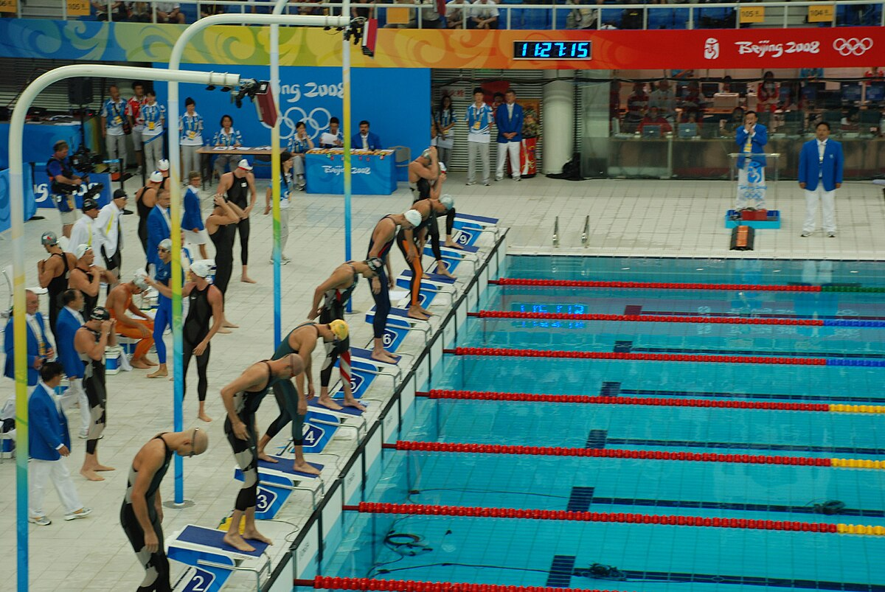
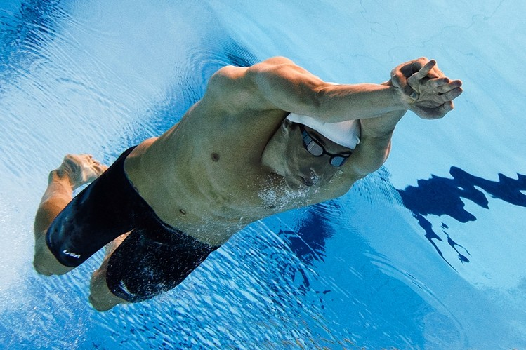
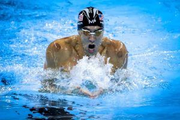
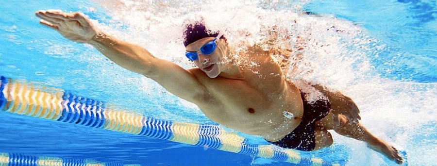

is an individual or team racing sport that requires the use of one's entire body to move through water. The sport takes place in pools or open water (e.g., in a sea or lake). Competitive swimming is one of the most popular Olympic sports, with varied distance events in butterfly, backstroke, breaststroke, freestyle, and individual medley. In addition to these individual events, four swimmers can take part in either a freestyle or medley relay. A medley relay consists of four swimmers who will each swim a different stroke, ordered as backstroke, breaststroke, butterfly and freestyle.  Swimming each stroke requires a set of specific techniques; in competition, there are distinct regulations concerning the acceptable form for each individual stroke. There are also regulations on what types of swimsuits, caps, jewelry and injury tape that are allowed at competitions. Although it is possible for competitive swimmers to incur several injuries from the sport, such as tendinitis in the shoulders or knees, there are also multiple health benefits associated with the sport.
Competitive swimming became popular in the 19th century. The goal of high level competitive swimming is to break personal or world records while beating competitors in any given event. Swimming in competition should create the least resistance in order to obtain maximum speed. However, some professional swimmers who do not hold a national or world ranking are considered the best in regard to their technical skills. Typically, an athlete goes through a cycle of training in which the body is overloaded with work in the beginning and middle segments of the cycle, and then the workload is decreased in the final stage as the swimmer approaches competition.
Since the 1990s, the most drastic change in swimming has been the addition of the underwater dolphin kick. This is used to maximize the speed at the start and after the turns in all styles. David Berkoff became the first to use it successfully; at the 1988 Olympics, he swam most of the 100 m backstroke race underwater and broke the world record in the distance during the preliminaries. Another swimmer to use the technique was Denis Pankratov at the 1996 Olympics in Atlanta, where he completed almost half of the 100 m butterfly underwater to win the gold medal. The dolphin kick was rarely used in freestyle sprint races until 2008, when "technical" swimsuits were introduced to the sport at the European Short Course Championships in Rijeka, Croatia. Technical-suited Amaury Leveaux set world records of 44.94 seconds in the 100 m freestyle, 20.48 seconds in the 50 m freestyle and 22.18 in the 50 m butterfly, spending more than half of each race submerged, more than any of his competitors. Subsequently, FINA made a rule that swimmers may not go farther than 15 metres underwater. In 2014, FINA rules that a single dolphin kick may be added to the breaststroke pullout before the first breaststroke kick. In the past decade, American competitive swimmers have made the most use of the underwater dolphin kick, notably Olympic and World medal winners Michael Phelps and Ryan Lochte.
is a swimming stroke swum on the chest, with both arms moving symmetrically, accompanied by the butterfly kick (also known as the "dolphin kick") along with the movement of the hips and chest. It is the newest swimming style swum in competition, first swum in the early 1930s and originating out of the breaststroke.
is one of the four swimming styles used in competitive events regulated by FINA, and the only one of these styles swum on the back. This swimming style has the advantage of easy breathing, but the disadvantage of swimmers not being able to see where they are going. It also has a different start from the other three competition swimming styles. The swimming style is similar to an upside down front crawl or freestyle. Both backstroke and front crawl are long-axis strokes. In individual medley backstroke is the second style swum; in the medley relay it is the first style swum.

is a swimming style in which the swimmer is on their chest and the torso does not rotate. It is the most popular recreational style due to the swimmer's head being out of the water a large portion of the time, and that it can be swum comfortably at slow speeds. In most swimming classes, beginners learn either the breaststroke or the freestyle (front crawl) first. However, at the competitive level, swimming breaststroke at speed requires endurance and strength comparable to other strokes. Some people refer to breaststroke as the "frog" stroke, as the arms and legs move somewhat like a frog swimming in the water. The stroke itself is the slowest of any competitive strokes and is thought to be the oldest of all swimming strokes.
is a category of swimming competition, defined by the rules of World Aquatics, in which competitors are subject to only a few limited restrictions on their swimming stroke. Freestyle races are the most common of all swimming competitions, with distances beginning with 50 meters (55 yards) and reaching 1,500 meters (1,600 yards), also known as the mile. The term 'freestyle stroke' is sometimes used as a synonym for 'front crawl', as front crawl is the fastest surface swimming stroke. It is now the most common stroke used in freestyle competitions. The first Olympics held open water swimming events, but after a few Olympics, closed water swimming was introduced. The front crawl or freestyle was the first event that was introduced.
